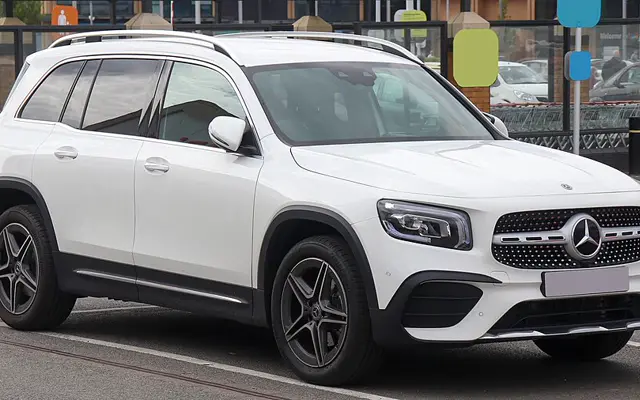

Par Motor › Precios por modelo › Mercedes-Benz GLB
Precio de segunda mano · noviembre de 2026¿Cuánto vale un Mercedes-Benz GLB de segunda mano?

Precio justo estimado de un Mercedes-Benz GLB usado en España, año por año, con los kilómetros normales para su edad y en buen estado: de 21.000 € a 44.200 €. Para tasar el tuyo con sus kilómetros reales y su estado, usa el tasador gratis.
Precios del Mercedes-Benz GLB por año
GLB (2019–hoy)
Precio de nuevo: 180 136 CV, 40.000 € · 200d 150 CV, 45.000 € · 200 163 CV, 43.000 €
| Año | Km normales | 180 136 CV · Gasolina | 200d 150 CV · Diésel | 200 163 CV · Gasolina |
|---|---|---|---|---|
| 2026 | 5.000 km | 40.900 € | 44.200 € | 44.000 € |
| 2025 | 20.000 km | 35.000 € | 37.800 € | 37.600 € |
| 2024 | 35.000 km | 32.700 € | 35.300 € | 35.100 € |
| 2023 | 50.000 km | 30.500 € | 32.900 € | 32.700 € |
| 2022 | 65.000 km | 28.400 € | 28.200 € | 30.500 € |
| 2021 | 80.000 km | 25.400 € | 26.000 € | 27.300 € |
| 2020 | 95.000 km | 22.200 € | 25.900 € | 23.900 € |
| 2019 | 100.000 km | 21.000 € | 25.700 € | 22.600 € |
Kilómetros normales: 15.000 al año en gasolina, híbridos y eléctricos, y 20.000 en diésel, con un máximo de 100.000 km (por encima no tasamos: el precio depende demasiado del historial de cada coche). Cifras redondeadas a 100 €.
Preguntas frecuentes
¿Cuánto vale un Mercedes-Benz GLB de segunda mano?
Según el año, la versión y los kilómetros, un Mercedes-Benz GLB usado vale hoy de 21.000 € a 44.200 € en España. El más barato de nuestra tabla es un 180 de 2019 (21.000 €) y el más caro un 200d de 2026 (44.200 €). Son precios justos estimados entre particulares y profesionales, con los kilómetros normales para su edad y en buen estado.
¿Cuánto valor pierde un Mercedes-Benz GLB al año?
Con unos años encima, un Mercedes-Benz GLB pierde alrededor de un 7 % de su valor cada año (calculado sobre el 180 de la generación GLB). Los primeros años la caída es mayor y a partir de los 70.000 km se acelera.
¿Qué motorizaciones tiene el Mercedes-Benz GLB?
En nuestra base de datos hay versiones gasolina y diésel, en 1 generación: GLB.
¿Cómo sé si me piden demasiado por un Mercedes-Benz GLB?
Abre el tasador de Par Motor, elige el Mercedes-Benz GLB, el año y los kilómetros reales, y escribe lo que te piden. Te diremos si está por debajo del precio justo (chollo) o por encima (caro). Es gratis y no pide registro ni matrícula.
Otros Mercedes-Benz
- CLA
- Clase A
- Clase B
- Clase C
- Clase E
- Clase G
- Clase S
- Clase T
- Clase V
- CLK
- CLS
- EQA
- EQB
- EQE
- EQS y EQC
- GLA
- GLC
- ML y GLE
- SL y AMG GT
- SLK y SLC
Compara su coste real
El precio de compra es solo una parte. Mira cuánto te costaría al mes con combustible, seguro, neumáticos, mantenimiento y lo que pierde de valor.
Abrir el comparador →